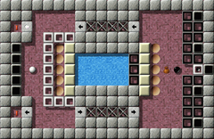
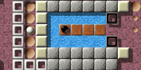
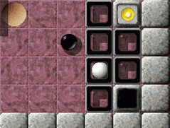
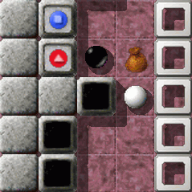
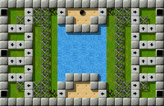

Level des MonatsJeden Monat werfen wir einen näheren Blick auf einen herausragenden Level. Herausragende Levels sind dabei solche, die sich durch die höchsten Bewertungen durch die Spieler auszeichnen, und dabei zugleich von genügend vielen Spielern auch bewertet wurden. Es ist also Ihre Wahl, die den Level des Monats bestimmt. Bitte werten Sie Levels, nachdem Sie sie gespielt haben, und vergessen Sie nicht, die Wertungen zusammen mit Ihren Spielergebnissen zum Ende eines jeden Monats uns zuzusenden. Sie können alle vorigen Level des Monats in unserem Archiv finden. April 2009: „Plan Ahead“ von Jacob Scott
Im Oktober 2008 wurde als erster Beitrag im klassischen One-Screen-Format „Industrial Puzzles“ von Raoul Bourquin als Level des Monats (LdM 10/2008) präsentiert. Dann wurde mit „Procrustes“ von Andreas Lochmann ein weiterer „Onescreener“ im Dezember zum „Olymp“ der „ausgezeichneten“ Enigma-Level-Produktionen hinzugewählt (LdM 12/2008). Diesen Monat werden wir einen weiteren Level im „handlichen“ One-Screen-Format würdigen. Soll aber nicht heißen, epische große Abenteuer und lange Entdeckungsreisen seien out. Vielmehr zeigen anscheinend auch die kleineren „Kammersuiten“, dass sie es in sich haben und mehr sind als ein weniger ernst zu nehmendes Capriccio. In einem dieser Level wimmelt es beispielsweise nur so von Spiegeln und Geheimnissen, Laserstrahlen schwirren durchs backstein-industrielle Umfeld, sodass man kaum noch glauben kann, dass hier noch etwas möglich ist. Anderswo lodert eine Feuersbrunst, inmitten einer antiken Herberge, ein „Welcome“ Spiel der besonderen Art: Prokrustes persönlich hatte eingeladen! In Jacob Scotts „Plan Ahead“ lodert nichts, alles wirkt so seltsam ruhig, statisch, und die zwei Akteure lassen den Eindruck zu, als sei dies hier eine mathematische Gleichung, die nach Ausgleichen, Transformieren, Eliminieren ruft: Weiße Kugel + 2 Dynamitstangen + y Oxyds = Schwarze Kugel + x Körner + Tasche + y Oxyds Dieses Levelgebilde ist alles andere als ein „fetziger“ Actionlevel, hier geht es um Handeln mit Bedacht. Veranschaulicht ähnelt es eher einem barock-symmetrischen Verlies mit zwei Insassen, die mehr oder weniger Bewegungsfreiheit genießen, und die wissen: Nur wenn alle Oxyds leuchten, ist der Ausbruch aus diesem Level-Gemäuer gelungen, der Orden in Silber oder Gold verliehen :-)

Enigma V # 21
Spieler, sei willkommen im Verlies von Yin und YangDieses Gefängnis stört kein Wärter mehr, Schwarz und Weiß sind auf sich alleine gestellt. In aller Ruhe können beide Insassen die Lösung ihres Schicksals überlegen. So ensteht ein „Dialog der Gedanken“. Weiß flüstert zu Schwarz: „Du da drüben, kannst wenigstens zu mir kommen, aber siehst du den bröckeligen Boden, da kann man nur einmal rüber, bevor er in den Abgrund bröselt. Du hast doch diese 5 Körner, pack die doch in die Tasche, und bring die mit. Die sind uns vielleicht eine letzte 'Mahlzeit'“. Und Weiß schaut auf die Uhr, die Zeit läuft, der Hunger wird größer, und spricht weiter: „Hey, hier bei mir haben die Wärter in 2 Nebenräumen, kurz bevor sie abgehauen sind und uns hier zurückgelassen haben, noch 2 Dynamitstangen dagelassen.“

Yang, beim nächsten Mal
schaffen wir's! Hämisch haben sie gejohlt: „Mit dem Dynamit können die beiden Verfluchten als letzte Chance die beiden weißen Mauern wegsprengen, und dann in das Schwimmbad in der Mitte springen: Diese ätzende Lauge hat noch keiner überlebt! Wer in dieses Wasser geht, kommt dank 'NaOH' nie mehr wieder raus!!“ HAHAHA HAHAHA HAHAHAAA!!! Schwarz denkt nach und schreit hysterisch: „Ich kenn' den Konstrukteur dieses Kerkers! 'Duffy' nennt er sich. Und der hätte gewiss eine Lösung parat, mit der wir in dieser ausweglos erscheinenden Situation doch einen Weg finden, alle Oxyds zu öffnen und die Aufgabe erfolgreich zu lösen. Denken wir doch mal nach …“ Vorausschauend … Vorausschauend planen … Willkommen in Jacob Scotts (aka Duffy) Plan Ahead :-)1. Der RundgangSchwarz sieht seine Möglichkeiten und überlegt: „Einmal kann ich rings herum: zu Weiß, und wieder zurück, den Pfeilen nach — aber nur einmal, dann ist der Weg zerbröselt. Dieses eine Mal muss ich nutzen. Ich muss es nutzen, um eine dauerhafte Verbindung Rechts-Links, Ost-West zu schaffen, die idealerweise von meinem weißen Partner zu nutzen ist, um bei mir das nur für Weiß zugängliche Oxyd zu öffnen.“ 2. Ein Yin und Yang Spiel

Weiße Träume
von schwarzen Wegen Weiß murmelt vor sich hin: „Warum nur darf der Eine, was der Andere nicht darf? Welcher Schöpfer hat mich als weiß definiert? Und warum darf ich nicht unter eine schwarze Arkade gehen, liebe Enigmaschöpfer? Wie viel einfacher wäre doch alles, wenn ich alles könnte, dürfte … Und mein Partner, die Yin da drüben, auch! Dann müsste ich nicht warten, bis Yin zu mir findet, und der Duffy könnte mir, dem Yang nicht verbieten, schwarze Wege zu gehen!“ 3. Geteilte WeltBeide rufen im Chor: „Duffy! Was hast du uns nur angetan? Eingekerkert in diese freudlose Welt, getrennt, separiert, mit all diesen komischen Gegenständen: Dynamitstangen, Körnern, wie man sie Vögeln zum Fressen hinwirft, und dieser leeren Tasche.“ Und beiden beginnt zu dämmern: „Mit den zwei Dynamitstangen die rechte und linke weisse Wand löchern, und über Duffys Ätzlauge in der Mitte einen Steg mit Hilfe der 'speziellen' Korneigenschaften bauen: So sollte es funktionieren. Und mit einem Trick noch so manche schwarze oder weisse Arkade 'löchern' — und um aus den 'Dynamitnischen' wieder herauszufinden, irgendwie diese 'One-ways' unschädlich machen.“ Sie kommen der Lösung näher — gemeinsam können die beiden es schaffen! 4. Raumbildung im eigenen Inventar — Vom Wachstum eines SamenkornsSchwarz erkennt: Sie muss Yang, der weißen Kugel, Körner mitbringen, bei ihrem einzig möglichen Rundgang — aber wie? Die Enigmagötter haben in ihrer Schöpfungsgeschichte den Körnern eine spezielle Eigenschaft gegeben, die hier wichtig ist: Ein abgelegtes Korn „wächst“ zu einem beweglichen hölzernen Block heran: die Götter gaben ihm den Namen „st-wood“. Spieler, nutze diese Eigenschaft. Doch Vorsicht! Wenn Yin einen Seed aufnimmt, hinüber zu Yang geht und ihm das wertvolle Geschenk vorschnell übergibt, tja dann … ist die Zeit für eine andere Gabe der Götter gekommen: F3 :-( Die Tasche!! — Spieler, nutze die Tasche! 5. Wer hat die Macht in dieser „Partnerschaft“?

Übergabe —
Was wohl in der Tasche ist? Zuerst ist Yin die aktiv geschaltete Murmel, wechselt sie mit ihrem Yin-Yang-Item auf Yang und verleiht ihm Aktivität, so kann ihr Partner, so sehr er es wollte, sie nicht mehr zurück ins Spiel bringen, Yin bleibt dann für lange Zeit, im schwierigen Modus für immer passiv geschaltet. Spieler, finde also den richtigen Zeitpunkt zur „Machtübergabe“! Letztendlich werden es dir in diesem Spiel beide danken. :-) Fazit:Dieser Onescreener ist so ganz anders als beispielsweise „Industrial Puzzles“, er ist ein Yin-Yang-Level, mit symmetrischem, klaren Aufbau, alles offenbarend. Das ein so klarer, kleiner Level so viel „Ärger“ machen kann: Wir danken Jacob Scott für diese „Fuge“ an Inspiration, von der man anfangs gar nicht vermutet, dass sie viel Wissen, Timing, Genauigkeit und vorausschauendes Handeln, ein „Plan Ahead“ benötigt. Yin und Yang, symbolisiert durch unterschiedliche Kugelfarben, zeitlich und räumlich getrennt durch ein paar „Grates“, genauer gesagt „One-ways“ (um in der Sprache der „Götter“ zu bleiben), können es erreichen, zueinander zu finden und den Level zu lösen. Sie schaffen es durch Teamwork und Vertrauen zueinander: Wer switched wann auf wen, und wo setzt wer wann was ein. Duffys Ordnung muss kaputt gemacht werden, damit die räumliche Verbindung geschaffen werden kann. In der schön-verstaubten Industriehalle (vgl. LdM 10/2008) muss die Ordnung wieder hergestellt werden, damit wieder produziert werden kann. Patentrezepte unerwünscht. Und damit wie im täglichen Leben. ;-) Weitere Lobeshymnen erspare ich mir: „Plan Ahead“ ist ein wertvolles „Kammerstück“ des Levelautors, der so schöne Sinfonien wie „Island Labyrinth“ komponiert hat und uns Enigma Freunden stets viel Freude bereitet hat — so auch hiermit. Vielen Dank. Und, ich will mal „vorausschauen“, und hoffen: Dass die nächsten schönen Duffy-Level bald erscheinen werden. Plan it again, Duffy! :-) Mecke Vielen Dank für deine inspirierenden Worte, lieber Mecke. Wir
können dich und alle unsere Ldm Leser und Leserinnen, sowie alle Enigma
Spieler und „Duffy“-Fans beruhigen: Auch in der nächsten Ausgabe
von Enigma werden selbstverständlich wieder „einige“ exzellente
Kreationen von Jacob Scott enthalten sein, wenngleich auch keine neuen
Schöpfungen — der Erschaffer unzähliger Enigmawelten feiert seit
einiger Zeit seinen wohlverdienten „siebten Tag“. Aber einige dieser
„neuen alten“ Werke haben es wahrhaft in sich, und vielleicht wird uns
das eine oder andere davon noch hier an diesem Ort begegnen, soviel sei an
dieser Stelle schon einmal gesagt.
Abgesehen von den Ausführungen zu seinem Level des Monats — der
auf der Yin-Seite des Artikels zu finden ist — haben wir auch eine kurze
allgemeine Betrachtung über „Eleganz im Leveldesign“ vom Autor
erhalten, die einen würdigen Schluss-Satz unserer ersten Yin-Yang Artikel
Komposition darstellt. Das meiste, das in diesen Sätzen gesagt wird, gilt
nicht nur für „Plan Ahead“, sondern auch für zahlreiche
andere exzellente Level von Jacob — und für viele unserer bisherigen
Levels des Monats.
Über Eleganz im Leveldesign

Versailles
An dieser Stelle möchte ich noch einige allgemeine Überlegungen zu Enigma Levels anstellen - und diese Betrachtungen auch auf Spiele-Levels generell ausdehnen - und zwar darüber, was es bedeutet, „elegant“ zu sein. M.E. bedeutet die Aussage „ein Level ist elegant“ zuerst, dass kein Teil des Levels wahlfrei ist (und eine eindeutige Lösung existiert), und weiterhin, dass der Level der schwierigste all solcher Level mit der gleichen Gesamtstruktur ist. Z.B. glaube ich, dass „Plan Ahead“ in gewissem Sinn „solide“ ist; soll heißen, es besitzt eine (ziemlich) eindeutige Lösung, und es existieren keine auffälligen Ergänzungen mit dem alleinigen Zweck alternative Lösungen zu verhindern — alles in dem Puzzle passt perfekt zusammen. Weiterhin scheint das Puzzle im gegebenen Kontext „maximal schwierig“ zu sein; d.h., es gibt keine noch so kleine Wendung, um die Schwierigkeit zu erhöhen (ohne die Gesamtstruktur als solche zu ändern; was allgemein bedeutet, dass z.B. alle Gegenstände benutzt werden müssen). Ich glaube, dass ein Level irgendwie selten beide Bedingungen erfüllt (seine Struktur erlaubt genau eine Lösung ohne willkürliche Änderungen, und es ist so schwierig wie möglich). Falls ein Level beide Kriterien erfüllt, wird es m.E. als „elegant“ bezeichnet, ansonsten eben nicht. Damit scheint „Eleganz“ also das Ziel jeglicher Levelgestaltung zu sein — die „eleganten Levels“ fordern den Spieler am besten und belohnen den Erfolg am meisten. Ich hoffe, dass dies auch auf „Plan Ahead“ zutrifft, und dass „Plan Ahead“ sich als anregender Ausflug darstellt — zu einem kleinen See, beinahe unüberwindbar, außer durch Henry Blackballs sorgfältige Vorausplanung. Jacob Scott
|